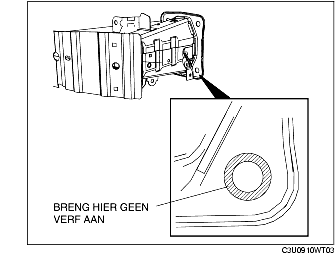

VERWIJDEREN/PLAATSEN VOORBUMPERVERSTERKING
B3E091050070W01
1. Verwijder de voorbumper. (Zie VERWIJDEREN/PLAATSEN VOORBUMPER.)
2. Verwijder de koplampunit. (Zie VERWIJDEREN/PLAATSEN KOPLAMPUNIT.)
3. Verwijder de claxon. (Zie VERWIJDEREN/PLAATSEN CLAXON.)
4. Plaats de volgende onderdelen uit de weg
-
(1) Onderste afdekplaat
-
(2) Stuurbekrachtigingspomp (LF)
-
(3) Sproeierreservoir
5. Verwijder de onderdelen in de aangegeven volgorde, zie de tabel.
-
Opmerking
-
• Vervang als bout A (slechts één mogelijke locatie links onder) is verwijderd deze altijd door de voorgeschreven bout (ond.nr. BPYK 50 0Z2) voor een goede massaverbinding van de claxon.
|
1
|
Bout A
|
|
2
|
Bout B
|
|
3
|
Voorbumperversterking
|
6. Plaats de onderdelen in omgekeerde volgorde.
7. Controleer na het plaatsen of de claxon goed werkt.
Aanwijzing voor plaatsen - voorbumperversterking
Opnieuw gebruiken van de voorbumperversterking
-
Opmerking
-
• Om voor een goed massacontact te zorgen, mag er geen lak worden aangebracht op het deel waar bout A contact maakt met de voorbumperversterking.

Plaatsen van een nieuwe voorbumperversterking
1. Verwijder de tape van de voorbumperversterking.
-
• Verwijder roest- of lakresten op het gedeelte waar de tape gezeten heeft als de tape al verwijderd is.
2. Werk na het plaatsen van bout A het gedeelte waar nog geen lak aanwezig is op de bumperversterking bij met een lakstift.